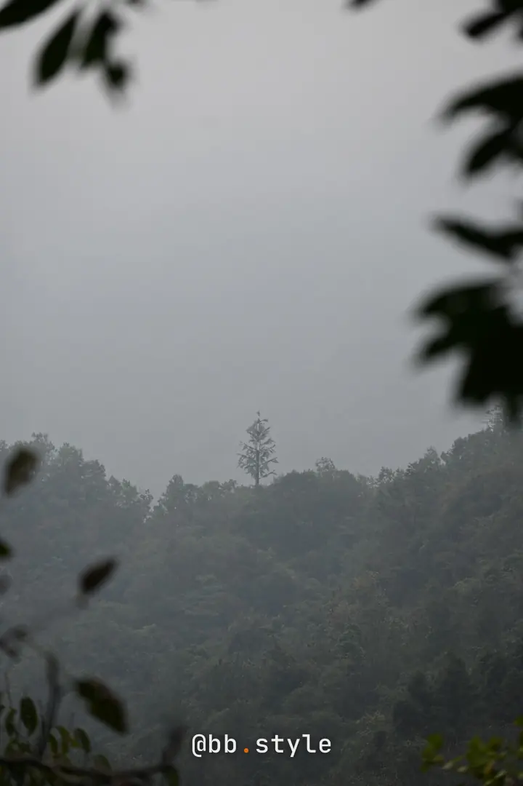

Off work
Photography.
Capturing moments, chasing light, and finding beauty in the everyday.





All photographs © Bihan Qian.
Capturing moments, chasing light, and finding beauty in the everyday.

All photographs © Bihan Qian.